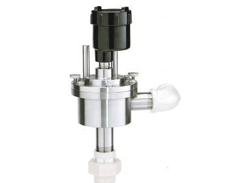

Your one stop shop for lab equipment.

Hplc system

carbon analyzer
Viscometer
We deal in various type of laboratory equipment making us your one stop shop for all your laboratory equipment needs. Our products cut across all fields including food and beverage testing equipment for QC labs.We are located on Elm street along the Nairobi avenue building number 10.For simple lab equipment, one can just visit our shop on the above street and make their orders.For large equipment, we usually request all our potential customers to make a pre-order so that we can make transportation and delivery arrangements.
Here are some of the customer reviews we've received.
Our products are categorised as follows.
These categories summarizes our wide range of products.For any of our potential customers who may be interested in doing bussiness wuth us, can visit our shop for more products.For more products Visit cflaboratoryequipmentdealers/products.com
Below is a short video of one of our partners launching the newly developed PlasmaQuant 9100 for the analysis of complex sample matrices.It will be in stock as soon as we receive the products from the manufacturer.
For more information about our services and products, one can simply visit our support website here visit cfcustomersupport.com